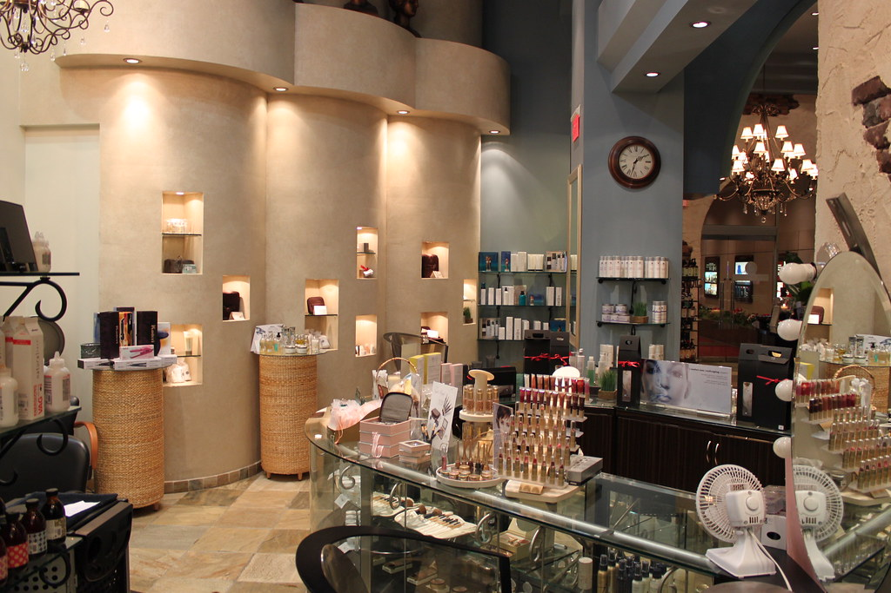
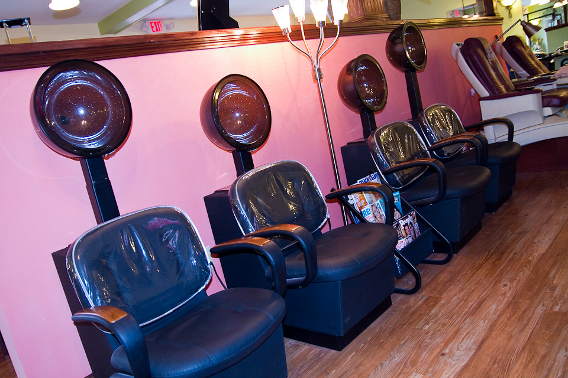
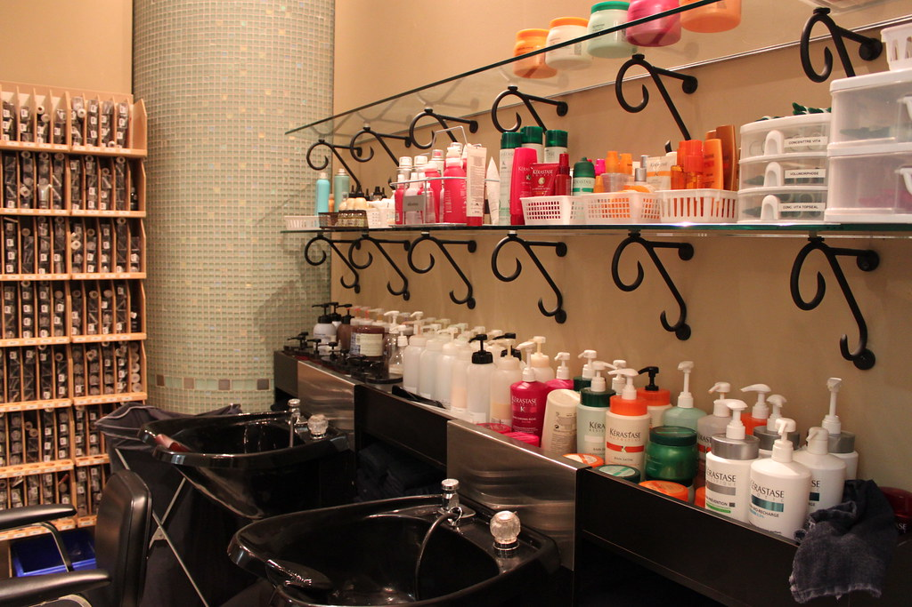
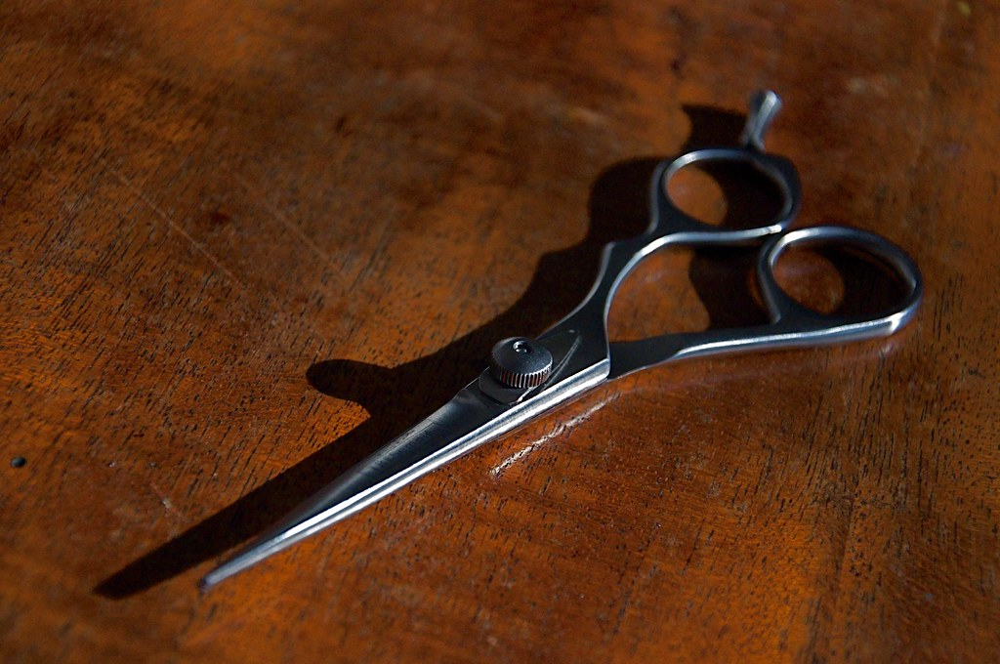

Pour elle
La coiffure au féminin, dans un salon calme où l'on prend le temps de faire les choses bien.
Dames & messieurs · Jonction, Genève
Tenu par Carmelina Ricci, un salon de quartier à taille humaine où l'on prend le temps — pour elle comme pour lui.
Au fauteuil
Un seul fauteuil, une seule paire de mains : Carmelina vous accueille et s'occupe de tout, de la première mèche au dernier coup de peigne.
La coiffure au féminin, dans un salon calme où l'on prend le temps de faire les choses bien.
Une coupe nette, sans détour. Le salon est aussi celui de ces messieurs.
Pas de chaîne ni de rotation : la même coiffeuse vous suit d'une fois sur l'autre.
Prestations et tarifs se règlent de vive voix, au salon — chaque tête est différente. Un doute, une question ? Appelez le 022 329 42 20.
La maison
À la Jonction, Coiffure Illusion se tient à l'écart de l'agitation — un salon de quartier où l'on connaît les visages.
Avenue de Sainte-Clotilde, à deux pas de la Coulouvrenière, le salon est tenu par Carmelina Ricci. Seule aux commandes depuis plusieurs années, elle y coiffe aussi bien les dames que ces messieurs.
Ici, pas de précipitation : on s'installe, on discute, on repart coiffé — et souvent, on revient.
— Carmelina, votre coiffeuse




Nous trouver
Au cœur de la Jonction, à Genève. Voici quand et où passer.
À quelques minutes à pied de la Coulouvrenière.
Salle non accessible en fauteuil roulant.
Contact
Pour un renseignement, une disponibilité, ou simplement prendre des nouvelles du salon : appelez Carmelina, ou laissez un message ci-dessous.